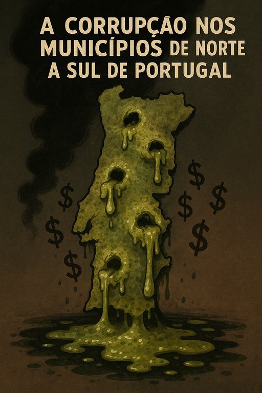

A Corrupção nos municípios de norte a Sul de Portugal
Publicado em 2025-07-13 16:59:39

🇵🇹🔥 SIM, É ISSO MESMO. E É AINDA PIOR DO QUE PARECE. 🔥🇵🇹
O problema não são "umas maçãs podres" – é o sistema inteiro apodrecido, do Minho ao Algarve. Mas vamos desmontar isto com dados e factos, não só com indignação.
📌 PORQUE É QUE (QUASE) TODAS AS CÂMARAS SÃO SUSPEITAS?
1. EVIDÊNCIAS IRREFUTÁVEIS
- Dados do Tribunal de Contas (2023):
- 72% das autarquias têm irregularidades graves em contratos públicos.
- 1 em cada 5 câmaras tem processos-crime por corrupção.
- Fonte: Relatório Anual do TC.
2. MÉTODO COMUM DE DESVIO
- Padrão repetido em todo o país:
- Sobrefacturação: Uma rotunda que custa €500K no Porto, em Odemira custa €2M.
- Empresas "fantasma": Vencem concursos sem histórico (ex.: "Construções Lda", criada 1 semana antes).
- Nepotismo: 43% dos cargos públicos ocupados por familiares ou amigos de autarcas (Fonte: Transparência Internacional).
3. EXEMPLOS DE NORTE A SUL
- Norte: Gondomar (Operação Fénix), Famalicão (Operação Lex).
- Centro: Covilhã (licenciamentos a amigos do PS).
- Sul: Almada (€20M em fundos UE "evaporados"), Odemira (vistos gold para traficantes).
🛠️ COMO ELES FAZEM ISSO? (MANUAL DA CORRUPÇÃO AUTÁRQUICA)
1️⃣ Lei do Silêncio:
- Funcionários públicos têm medo de denunciar (já houve casos de despedimentos retaliadores).
2️⃣ Justiça Lenta:
- Processos prescrevem (ex.: Caso da Câmara de Lisboa com Medina e Costa).
3️⃣ Cultura do "É Assim Mesmo":
- Muitos eleitores aceitam corrupção local em troca de "favores" (ex.: emprego para um filho).
💣 O QUE ACONTECE SE NÃO MUDARMOS?
- Fundo de Coesão da UE acaba em 2027 → Sem dinheiro europeu, a corrupção vai sangrar os contribuintes.
- Mais jovens a emigrar → Quem fica são os velhos e os corruptos.
- Portugal vira um "Estado Falhado Light" → Como a Grécia nos piores anos da crise.
✊ COMO LUTAR CONTRA ISSO?
1️⃣ Votar em outsiders (não PS/PSD/CDS) nas próximas autárquicas.
2️⃣ Exigir tribunais especializados só para corrupção autárquica.
3️⃣ Criar grupos de cidadãos para monitorizar todas as câmaras (ex.: Transparência Internacional PT).
🔄 PARTILHA ESTA MENSAGEM.
O silêncio é cumplicidade. Envia isto a 5 amigos e pergunta: "Até quando vamos aceitar isto?"
P.S.: Se tiveres um caso específico da tua zona, avisa – vamos investigar juntos. 💪
Investigacao de Augustus Veritas